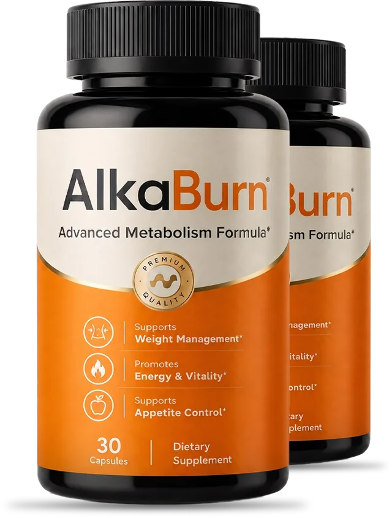

The “Baking Soda Morning Recipe” Everyone’s Talking About Is Real. But Most People Are Doing It Wrong.
If you tried the baking soda trick and felt nothing, you are not broken. You were only given one of the three steps.You’ve seen the videos.
A kitchen counter. A spoonful of baking soda. A glass of water. And woman after woman saying it changed the way she feels about food.
But almost every version online leaves out the part that matters most.
Baking soda is only one of three steps.
Use it alone, and a lot of people notice… nothing.
My name is Laura Bennett. I write about health for a living. And I spent most of last year trying to understand why this “recipe” seemed to help some women and do absolutely nothing for others.
The answer didn’t start in a lab.
It started at my little sister’s kitchen table… the night I realized I had been wrong about her for years.
If You Eat Less Than Your “Naturally Thin” Friend and Still Feel Stuck, Read This First
Let me guess.
You’ve tried the programs. The shakes. The gummies. The apps.
The treadmill that’s now a very expensive coat rack.
You eat less than the woman down the street who never seems to think about food. You move more than she ever has.
And your body still acts like it’s holding on to everything.
Then someone says the two most frustrating words in the English language: “Eat less.”
I know how much that stings.
Because those are the exact words I once said to my own sister. And I have never been more wrong about anything in my life.
So let me say what nobody has told you yet.
It was never just about willpower.
Your body has its own built-in “I’ve had enough” signal. When that signal goes quiet, every plate of food turns into a negotiation — and every diet turns into a fight you were never set up to win.
Lately your feed has been full of people talking about a “baking soda morning recipe.” You’ve heard about it so many times it’s starting to feel real.
Here’s what they’re leaving out… and why the order of the three steps changes everything.
Read this before you spend another dollar on anything else.
I Was the “Lucky” Sister. I Told Her to Try Harder. I Was Dead Wrong.
For most of my life, I was the one who could eat pizza on a Friday, skip the gym for a month, and never think twice about it.
I honestly believed that was because of something I was doing right. Some kind of discipline other people just didn’t have.
So when my younger sister Megan couldn’t get her body back after her second baby, I gave her the same advice everyone gives.
Eat less. Move more. Try harder.
I need to confess that, because it’s the whole reason I’m writing this.
I judged my own sister. Quietly. Politely. But I did. Somewhere deep down, I believed that if she really wanted it, she’d get there.
I was wrong. Not a little wrong. Completely, embarrassingly wrong.
And the day I found out just how wrong, I started down a path that led straight to the three steps those viral videos keep skipping.
So We Wrote Down Every Bite for 14 Days. The Two Columns Stopped Me Cold.
Megan has two kids, a job she loves, and a husband who adores her.
But she didn’t recognize her own body anymore.
She got dressed in the closet so he wouldn’t see her. She volunteered to take every family photo so she wouldn’t have to be in them.
And there I was, the “lucky” older sister, telling her to cut back on carbs.
One night she looked at me with tears in her eyes and said:
“Laura, I am trying. I swear to God, I am.”
So I decided to settle it once and for all.
For 14 days, we both wrote down everything we ate. Every meal. Every snack. Every step on our phones.
I will never forget the night I put the two columns side by side.
| Me (Laura) | Megan | |
|---|---|---|
| Portions | Normal, often seconds | Smaller than mine, every single day |
| Snacks | Whenever I felt like it | Almost none — she was “being good” |
| Daily steps | Desk job, short walks | Chasing two kids, more than me |
| Thinking about food | Barely | “All day long” |
| After 14 days | Felt exactly the same | Felt heavier, more bloated, exhausted |
My little sister was eating less than me. She was moving more than me.
And she was the one who felt worse.
That’s when the shame hit. She wasn’t lazy. She wasn’t lying. She wasn’t weak.
Something inside her body was responding to the very same food in a completely different way than mine.
And no diet on earth was going to fix a problem nobody had even named.
At 1 A.M., I Found the Research That Finally Made It Make Sense
I spent months reading the kind of research most people never see.
Then one night — kids asleep, coffee cold — I found what I’d been looking for.
It was about specialized cells lining your gut. After you eat, these cells release messenger hormones — you may have heard their names, GLP-1 and GIP — that travel to your brain and tell it:
“We’re good. You can stop now.”
That message is what makes food leave your mind after a meal. It’s the quiet, effortless “enough” that naturally thin people take for granted.
And researchers have been studying how things like chronic stress, highly processed food, poor sleep and the hormonal shifts after 40 may affect how well that system works.
I sat there with my heart pounding.
Weak signal. Constant hunger. A body that never hears “enough.”
That was Megan. That was every woman I knew who ate like a bird and still felt stuck.
It May Not Be That You Eat Too Much. It May Be That the “Enough” Signal Never Arrives.
Here’s the simplest way I can explain it.
Every time you eat, your body has to make a decision.
When the signal works
You feel satisfied. Food leaves your mind. Your body tends to use what you ate as energy.
When the signal is quiet
You finish dinner and still want something sweet. You think about snacks an hour after lunch. Your body acts like it’s in “save everything” mode.
Same food. Opposite response.
Now you can see why “just eat less” never solved the whole problem. You were trying to eat less while your body was still shouting “not enough!”
And there’s a second thief.
Even when your gut does release these messengers, an enzyme called DPP-4 breaks them down very quickly — often within minutes. So the message can fade before it ever gets through.
So hear me clearly.
It is not in your head. It is not a character flaw. Your body’s “enough” signal may simply have gone quiet.
And a quiet signal is something you can support.
Before You Read Another Word, See How Many of These Sound Like You
Maybe you’re thinking, “Okay, that explains Megan. But how do I know any of this applies to me?”
Fair question.
If four or more of these feel familiar, the problem may not be how hard you’re trying:
- You eat less than people who stay naturally thin, but your body holds on anyway.
- You wake up feeling flatter and end the day feeling swollen and heavy around the middle.
- You think about food even when you know you’re not physically hungry.
- Your body seemed to “change the rules” after 40, pregnancy, menopause or a stressful season.
- Whatever you lose through strict dieting seems to come back the moment you relax.
- Your belly, waist or arms seem to hold on first and let go last.
- You hit an energy wall every afternoon and reach for something sweet to get through it.
- You are tired of “starting over on Monday.”
That was Megan, almost word for word.
And once I understood what was going on, I realized there were really only four ways to approach it.
There Are Only Four Ways People Try to Fix This. Three of Them Keep Letting Women Down.
Once you see the real problem, the question gets simple: how do you support that “enough” signal and help your body use food as fuel again?
Here are the only four approaches I’ve ever seen. Let me save you a few years.
Eat less KEEPS FAILING
You can white-knuckle through hunger for a while. But if the “enough” message still isn’t getting through, the battle starts again the minute you relax.
Exercise more NOT ENOUGH ALONE
Movement is wonderful for you. But on its own it doesn’t quiet constant food thoughts. Remember: Megan moved more than me.
Prescription injections EXPENSIVE & ONGOING
They can be life-changing for some people under a doctor’s care. But they can cost hundreds of dollars a month, and many people report that the appetite comes back when they stop. That’s a decision for you and your doctor.
Support your body’s own system THE MISSING PIECE
Baking soda. Ginger. Berberine. Maybe you’ve tried one of them on its own and felt nothing. Of course you did — one ingredient can only do one job. Together, in the right form and the right ratio, they cover all three steps.
And that is exactly the part the viral videos never explain.
Let me show you why the order matters.
Calm the Gut. Protect the Signal. Flip the Switch. In That Order.
The complete recipe has three core ingredients. Each one has one job.
Miss one, and the whole thing weakens. That’s why a spoonful of plain baking soda in water was never the full answer.
Baking Soda
Sodium bicarbonate has been used for generations for digestive comfort. In this recipe, its job is to support a calmer, more balanced gut environment — the place where your “enough” messengers are made.
Ginger (Gingerol)
Ginger’s active compound, gingerol, has been studied in the lab for its effect on DPP-4 — the enzyme that breaks those messengers down. Its job: help the message last long enough to be heard.
Berberine
Berberine is one of the most studied plant compounds for activating AMPK — your body’s metabolic “energy switch” that helps decide whether food is used as fuel. Its job: support the switch.
Calm. Protect. Switch.
Not one ingredient. Three, working as a team.
But knowing the ingredients turned out to be the easy part.
Getting them to actually work together in real life? That almost made us give up.
Knowing the Recipe Wasn’t Enough. Our Kitchen Version Was a Disaster.
Maybe you’re already reaching for your phone and thinking exactly what we thought:
“If it’s just baking soda, ginger and berberine, I’ll grab all three at the store and mix them myself.”
That’s exactly what Megan tried first. Three weeks. A grocery-store ginger powder, a random berberine bottle, and a box of baking soda.
Her verdict? “It tastes awful, my stomach hates me, and I feel nothing.”
Here’s what nobody tells you:
- The form problem. Kitchen ginger powder is not the same as a concentrated gingerol extract. And supplement quality on store shelves can vary a lot from bottle to bottle.
- The ratio problem. Too much of one ingredient and the others can’t do their part. Too much baking soda can also upset your stomach.
- The delivery problem. A powder stirred into water meets your stomach first. A capsule is a cleaner, more consistent way to take the same amount every single morning.
- The consistency problem. Measuring tiny amounts on a kitchen scale every morning lasts about a week in a house with two kids.
That’s when I stopped researching ingredients… and started researching formulas.
I wanted one thing: all three steps, in standardized forms, in a consistent ratio, in something a busy mom would actually take every day.
I Watched My Sister Come Back to Life. One Week at a Time.
When I finally found a formula that checked every box, Megan started taking it the way the label says. One capsule, every morning, with a glass of water.
No crash diet. No new gym plan. Just one simple morning habit.
She called me about a week later. Not crying this time.
“Laura… it’s so quiet in my head.”
The constant chatter — what can I eat, what can’t I, how much, when… — had turned down.
Here’s how she described the months that followed:
- First few daysShe stopped wandering into the kitchen between meals. The afternoon craving showed up… just quieter.
- Week 1She put her fork down and realized she was done. Not deprived. Just satisfied.
- Week 2The tight, puffy feeling around her middle started to ease. Mornings felt lighter.
- Week 4Her favorite jeans — the ones hiding in the back of the closet — buttoned again.
- Month 2Her husband asked what she was doing differently. Friends said she looked “lighter” and rested.
- Months 3–4The biggest change wasn’t on the outside. Her body simply wasn’t fighting every meal anymore.
She wasn’t forcing herself to eat less. She was finally satisfied with less.
But the part that still makes me tear up isn’t her jeans.
For three years, she got dressed in the closet. She hid behind the camera at every birthday.
Last summer, she went to the lake and didn’t reach for a cover-up.
She’s in every photo with her kids now.
Megan’s experience is her own. Every body is different and individual results vary.
The Mirror Was Only the Part Everyone Could See
Megan expected her clothes to fit differently.
She did not expect the rest of her day to change with them.
The 3 PM crash she’d built her whole afternoon around stopped running the show.
She woke up feeling less puffy. She stopped feeling guilty every time she enjoyed a meal.
She had the energy to play with her kids instead of watching from the couch.
And the strangest part?
Food stopped being the loudest voice in the room.
That’s what women mean when they say they finally “feel like themselves again.” Not just smaller. Present. Clear. In control.
The Formula That Finally Put All Three Steps in One Capsule: AlkaBurn
After months of comparing labels, the formula Megan used is called AlkaBurn.

- Sodium bicarbonate — Step 1: calm the gut
- Concentrated ginger (gingerol) — Step 2: protect the signal
- Berberine — Step 3: flip the switch
- NAD+ — cellular energy support
- One capsule a day · 30 capsules per bottle
According to the manufacturer, AlkaBurn is produced in an FDA-registered facility, and it’s gluten-free and sugar-free.
Let me be clear about what it is not:
- It’s not a drug and not an injection.
- It’s not a starvation plan.
- It’s not another single-ingredient trick asking one compound to do three jobs.
It’s the complete three-step morning recipe in one capsule you take with a glass of water. That’s it.
What a Normal Day Can Start Feeling Like Again
This is the part that’s hard to understand until you feel it.
One day like that feels good.
Weeks of days like that can change how you feel in your own body.
Why These Ingredients Keep Showing Up in Metabolism Research
Megan’s story is just one story. So before recommending anything to you, I wanted to know what researchers have actually looked at.
Berberine
One of the most researched plant compounds in metabolic health. It has been studied in multiple clinical trials for its role in AMPK activation, healthy blood sugar levels already within the normal range, and body composition.
Ginger & gingerol
Used for centuries for digestion. Modern studies have looked at ginger’s role in appetite, digestive comfort and metabolism, and lab research has examined gingerol’s effect on the DPP-4 enzyme.
Sodium bicarbonate
A household staple long used to relieve occasional heartburn and indigestion by neutralizing excess acid.
NAD+
A coenzyme found in every cell, essential for turning food into energy. Levels naturally decline with age, which is why it has become one of the most talked-about topics in healthy aging research.
None of this means a supplement works the same way for everyone. It means the ingredients were chosen for a reason — not because they were trendy.
Would AlkaBurn Make Sense for a Body Like Yours?
You don’t need to be Megan. You don’t need to be a certain age or size.
- Women over 40 whose bodies seem to have “changed the rules.”
- Moms who never felt like their metabolism came back after pregnancy.
- Women in perimenopause or menopause who feel hungrier and puffier than before.
- Anyone exhausted by food noise and constant mental negotiation around eating.
- Women who tried baking soda, ginger or berberine alone and felt nothing.
- Anyone who wants a simple morning habit instead of another complicated program.
Who should talk to a doctor first: if you are pregnant or nursing, under 18, take any prescription medication (berberine can interact with some medications, including those for blood sugar), or have a medical condition, please check with your healthcare provider before using AlkaBurn or any supplement.
This isn’t for someone looking for a one-day miracle. It’s for the woman who’s ready to give a complete system enough time and consistency.
Here Is What Staying Stuck Has Already Cost You
Let’s talk honestly about money. Not just the price of AlkaBurn. The price of continuing the way things are.
Prescription weight-management programs can run hundreds of dollars a month. But the quiet expense is the graveyard of things you’ve already tried:
- $49 for gummies that did nothing.
- $59 for a “metabolism” powder you stopped after two weeks.
- $129 for a program you stopped opening.
- A gym membership you kept paying because canceling felt like giving up.
- New jeans in a bigger size. Then another one.
- A “fresh start” every January, every Monday, every time you saw a photo you hated.
For most women it isn’t one big expensive mistake. It’s $30 here, $80 there… for years.
And then there’s the cost nobody puts on a receipt.
Another summer in a cover-up. Another family photo you volunteer to take. Another year of “I’ll deal with it later.”
Doing nothing isn’t free. You’ve been paying for it every morning in the mirror.
Megan Didn’t Feel Like Herself Again in Two Weeks. It Took Four Months. That Changes What You Should Order.
I need to be honest with you before you see the offer.
When Megan called me in week one and said her head was quiet, that was real.
But the woman standing in the lake with her kids… that was month four.
Not because the formula is slow. Because her body had been running the same pattern for years, and patterns that old don’t change in a few mornings.
Think about the three steps:
- Calm is what many people notice first.
- Protect is what helps that feeling hold through the day.
- Switch is the slowest of the three — and the one that decides whether the change lasts.
That’s exactly why women who quit after two or three weeks feel like they “failed.”
They didn’t fail. They were early.
So when friends ask me how much AlkaBurn they should order, I stopped being gentle about it:
Order enough to finish what you start.
The Best Way to Try AlkaBurn Right Now
You won’t find AlkaBurn at the pharmacy or on store shelves. It’s sold through the manufacturer’s official secure checkout, which is also the only way to make sure you’re getting the real formula and the money-back guarantee.
Right now the manufacturer is offering three options:
- 6 bottles (180-day supply) — Buy 3, Get 3 Free: $49 per bottle, free shipping. The most popular choice.
- 3 bottles (90-day supply) — $69 per bottle, free shipping.
- 2 bottles (60-day supply) — $79 per bottle + shipping.
If you’re serious about giving all three steps a fair chance, the 6-bottle option is the one I’d choose. It’s the lowest price per bottle, and it means you won’t run out right when your body is starting to respond.
Yes! Show Me the AlkaBurn Packages →60-day money-back guarantee · Secure checkout
Please note: these discounted prices are set by the manufacturer, not by us, and they can change or end at any time without notice. If you can still see the 6-bottle offer below, it’s still available.
Try It for 60 Days. If You’re Not Happy, You Get Your Money Back.
I know you’ve been burned before. So here’s the part that made me comfortable recommending it.
Every AlkaBurn order is covered by the manufacturer’s 60-day money-back guarantee. Take it every morning. Pay attention to the first signs: a quieter mind around food, fewer trips to the pantry, steadier afternoons.
If you’re not satisfied for any reason within 60 days of your purchase, contact AlkaBurn’s customer support and request a refund of your purchase price.
Want to check before you order?
You can reach the official support team by SMS at +1 (855) 889-3137 or by email at contact@customercs.com.
You either love how you feel, or you ask for your money back. The only thing you can’t do is stay stuck exactly where you are.
Here Is Exactly What Happens After You Click
- Tap the button below to see the three AlkaBurn packages.
- Choose your package. Most people choose the 6-bottle supply.
- Complete your order on the manufacturer’s secure checkout page.
- Watch your inbox for your order confirmation and tracking details.
- When your bottles arrive, take one capsule each morning with a glass of water.
One capsule. One glass of water. Three seconds.
Choose My AlkaBurn Package →60-day money-back guarantee · Secure checkout
Three Months From Now, You’ll Be Living One of Two Stories
Here’s the truth no one likes to say: this pattern rarely fixes itself because you read one more article.
Path one is familiar.
Another Monday. Another restriction plan. Another trendy single ingredient. Another burst of motivation followed by the same hunger, the same food noise, the same feeling that your body is working against you.
Another summer in a cover-up. Another photo you’re not in. Another year of “I wish I’d started sooner.”
Path two is different.
You stop treating this like a moral failure. You calm the gut. You protect the signal. You flip the switch.
Three seconds every morning. Simple enough to actually do.
Picture your mind quieter around food. Getting dressed with the door open. Being in the photo with your kids instead of always behind the camera.
That isn’t vanity. That’s you, coming back.
You gave your body to your children, your work, your family and everyone who needed you.
It’s okay to want a piece of yourself back.
I’m Ready — Show Me My Options →60-day money-back guarantee · Secure checkout
With hope,Laura BennettHealth & Lifestyle Writer
P.S. Megan just sent me another photo from the lake. She wasn’t behind the camera. She was in the water with her kids, laughing. That’s the change I care about most.
P.P.S. Plain baking soda is not the recipe. It only does the first job. AlkaBurn covers all three: calm the gut, protect the signal, flip the switch — the part every viral video leaves out.
P.P.P.S. The Buy 3, Get 3 Free price is controlled by the manufacturer and can end at any time. If you still see it below, it’s still available — and every package is covered by the 60-day money-back guarantee.
Advertorial. This article is sponsored content. The story of Laura and Megan is a dramatization created to illustrate common experiences; names and details are illustrative and do not describe real individuals. Los Angeles Post receives compensation from sales of the product. Individual results vary. This product is not a substitute for medical care. Consult your healthcare provider before starting any supplement.
 60 DAYS GUARANTEE
60 DAYS GUARANTEE


 GOOD DISCOUNT
GOOD DISCOUNT